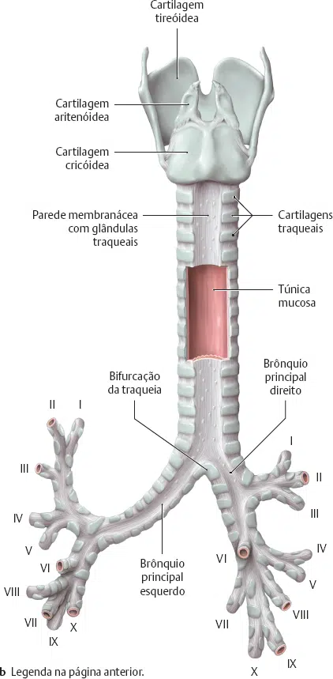
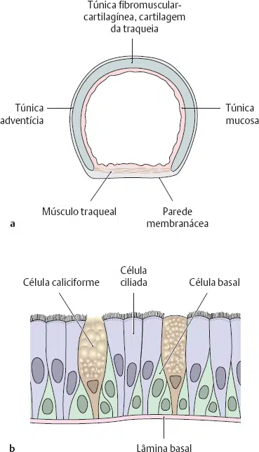
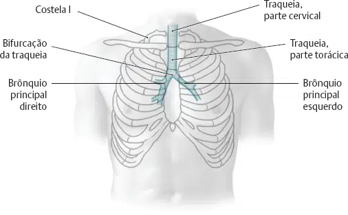
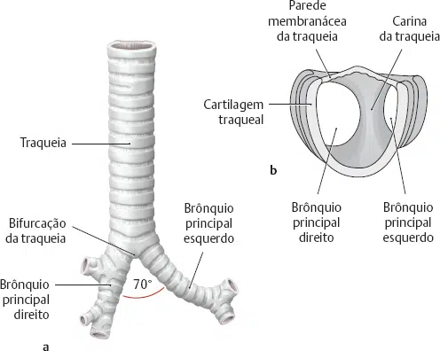
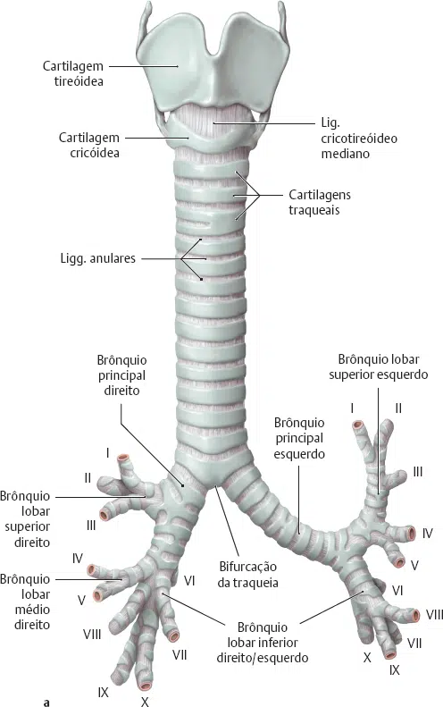
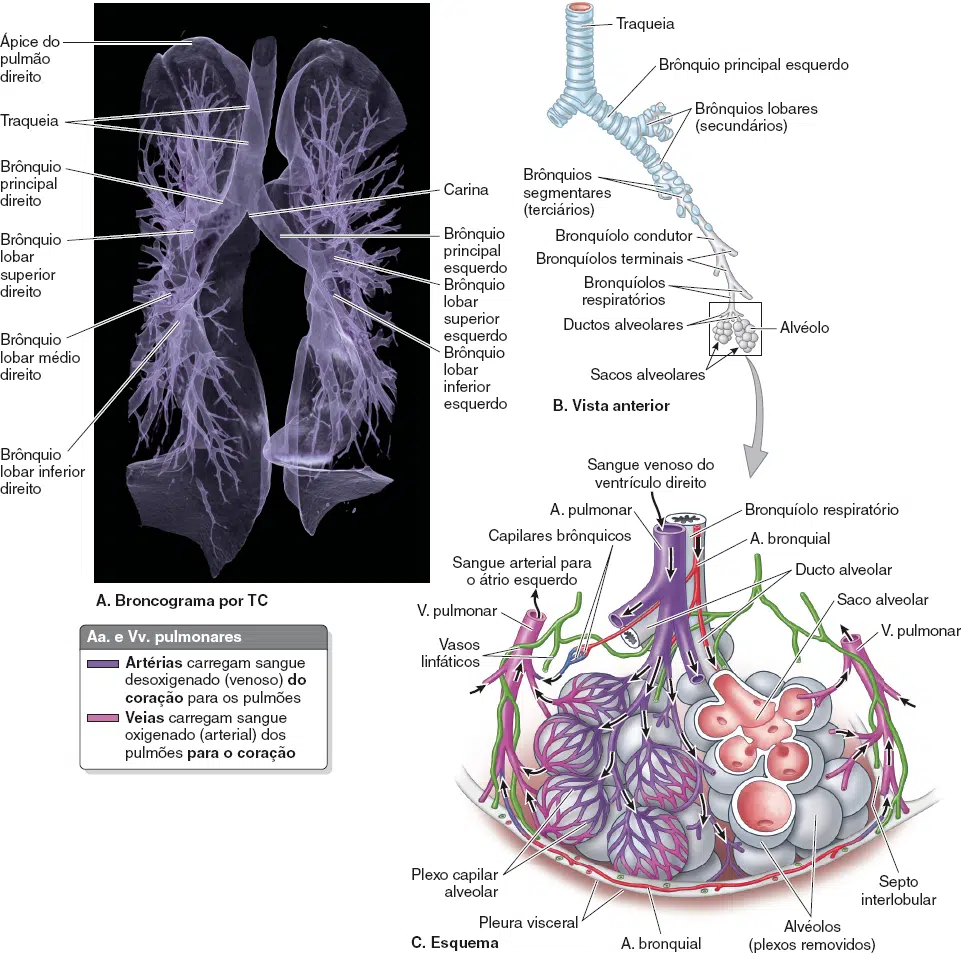
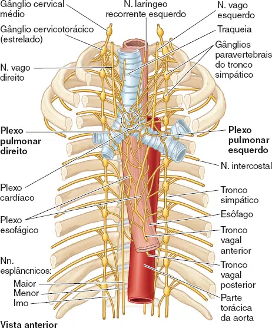
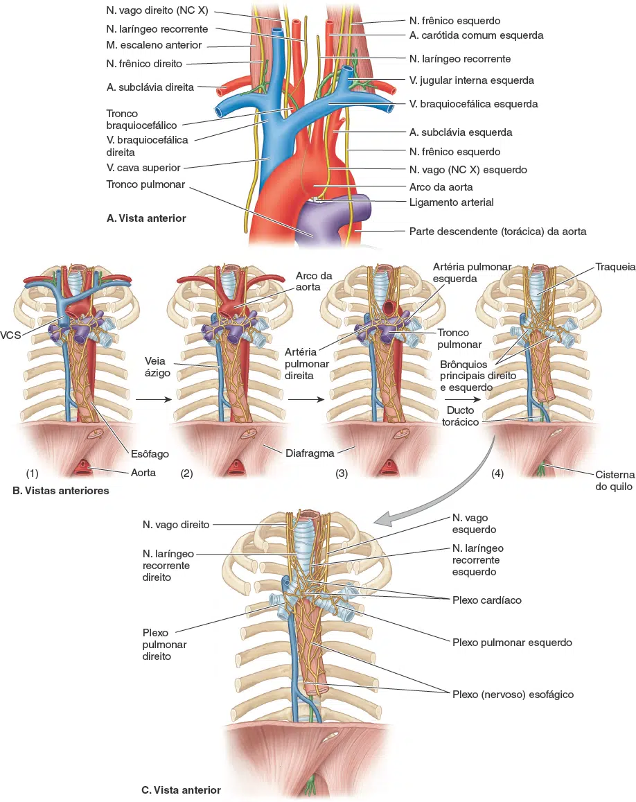
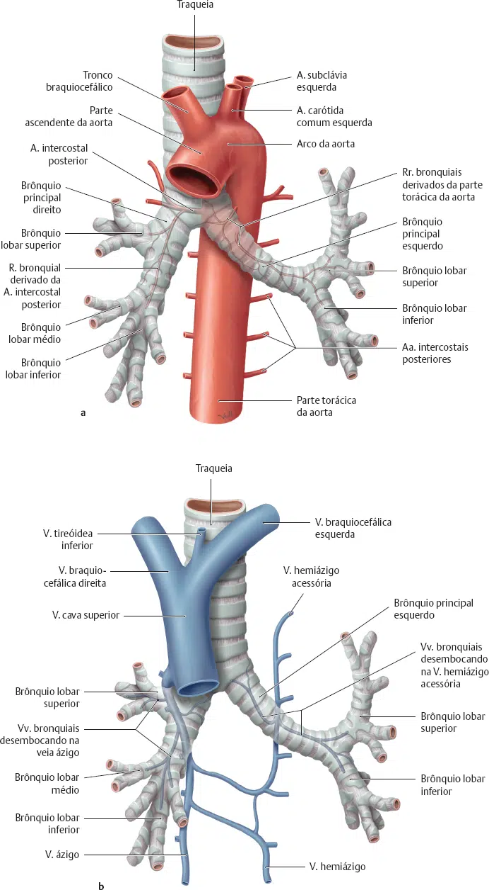

A traqueia, o tronco da árvore traqueobronquial, é um tubo muscular que constitui a via respiratória logo abaixo da laringe.
Está localizada no mediastino superior, suas paredes são sustentadas por anéis de cartilagem hialina em forma de “ferradura” ou de letra C (16 a 20 cartilagens traqueais). Os anéis cartilagíneos estão ligados uns aos outros por feixes de tecido conjuntivo fibroso (ligg. anulares).
Por esta razão a face posterior da traqueia é plana onde está em contato com o esôfago, permitindo a passagem do alimento. Ela desce anteriormente ao esôfago e se inclina um pouco para a direita do plano mediano.
Sua parede posterior não tem estruturas cartilagíneas, é dotada de uma lâmina de tecido conjuntivo e de músculo liso (parte membranácea com o músculo traqueal).


A traqueia termina (bifurca-se) no nível do ângulo do esterno, que corresponde ao nível do disco intervertebral entre as vértebras T4 e T5 (plano transverso do tórax).
A traqueia se divide nos brônquios principais (ou “primários“) direito e esquerdo.
O interior da árvore traqueobronquial, bem oa fim da traqueia onde o broncoscópio entra nos brônquios principais, é marcado pela carina, uma crista em forma de “quilha” (uma longa barbatana que se projeta do fundo do seu barco até a água) formada por uma projeção cartilaginosa do último anel traqueal.


Nos pulmões, os brônquios ramificam-se constantemente, dando origem à árvore traqueobronquial:
1 – Brônquios lobares (secundários): Cada brônquio principal divide-se em brônquios lobares. Há dois brônquios lobares no pulmão esquerdo e três no pulmão direito, cada um suprindo um lobo do pulmão.
2 – Brônquios segmentares (terciários): Cada brônquio lobar se divide em brônquios segmentares terciários, os quais suprem os segmentos broncopulmonares. Os segmentos broncopulmonares são as maiores subdivisões ressecáveis de um lobo.
3 – Bronquíolos condutores: Os brônquios segmentares dão origem a 20 a 25 gerações de bronquíolos condutores ramificados, que terminam como bronquíolos terminais. As paredes dos bronquíolos não contêm cartilagem.
4 – Bronquíolos respiratórios e alvéolos: Os bronquíolos terminais dão origem a bronquíolos respiratórios, que são caracterizados por sacos alveolares dispersos. O alvéolo pulmonar é a unidade estrutural básica de troca gasosa no pulmão.


A. TC 3D das vias respiratórias. B. Subdivisões da árvore bronquial. C. Alvéolos.
A inervação da traqueia e da árvore traqueobronquial é derivada principalmente dos plexos pulmonares, que são redes nervosas formadas por fibras dos nervos vagos (NC X) e dos troncos simpáticos.
1 – Fibras Parassimpáticas (Nervo Vago – NC X):
2 – Fibras Simpáticas (Tronco Simpático):
3 – Fibras Aferentes Viscerais (Sensitivas):


As artérias bronquiais são responsáveis por levar sangue para a nutrição das estruturas que formam a raiz dos pulmões e a pleura visceral.
As duas artérias bronquiais esquerdas geralmente originam-se diretamente da parte torácica da aorta.
A artéria bronquial direita, única, pode originar-se diretamente da aorta; contudo, geralmente a origem é indireta, seja por intermédio da parte proximal de uma das artérias intercostais posteriores superiores (geralmente a 3ª artéria intercostal posterior direita) ou de um tronco comum com a artéria bronquial superior esquerda.
A parte torácica da aorta e a artéria subclávia (através da artéria torácica interna) suprem a parede torácica e as estruturas do mediastino superior, contexto no qual a traqueia se insere.
A traqueia está localizada próxima às grandes veias do mediastino superior, como as veias braquiocefálicas e a veia cava superior (VCS).
Estruturas adjacentes, como o esôfago, têm drenagem venosa para os sistemas porta e sistêmico (pelas veias esofágicas), sugerindo que a traqueia drena para veias do sistema sistêmico local (plexos venosos tireóideos inferiores e intercostais superiores), embora isso não seja explicitamente confirmado nas fontes.
